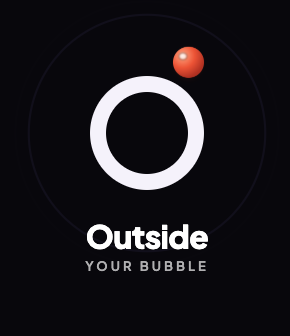

Mobile appOutside Your Bubble
A mobile app that helps you hear stories and perspectives beyond the themes of your day-to-day life.
A couple of projects I work on alongside my main role.

Mobile appA mobile app that helps you hear stories and perspectives beyond the themes of your day-to-day life.
A Telegram bot that extends an Instagram Stories creation course, built with AI instructions, evaluation sets, a harness, and a database.